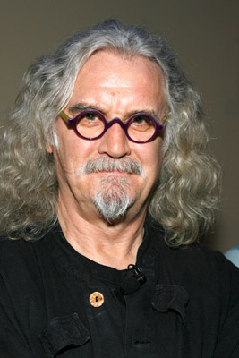

#5084 Ein Schotte macht noch keinen Sommer
Alternativ: What We Did on Our Holiday


 IMDB-Wertung: 6.9 / 10
IMDB-Wertung: 6.9 / 10  Metascore: 0
Metascore: 0 
Doug und Abi sind auf dem Weg in die Scheidung, aber vorher wartet noch ein Familientreffen in den Highlands, bei dem sie mit ihren Kindern die heile Familie vorspielen wollen. Das gestaltet sich jedoch schwerer als gedacht, denn die übermütigen Kids wollen von Diskretion nichts wissen und drohen ständig, das Geheimnis auffliegen zu lassen. Das will das auseinanderegehende Paar vor versammelter, ungeliebter Familie aber um jeden Preis vermeiden. Die Mischung aus angespannter Stimmung und chaotischer Verwandtschaft führt schon bald zu allerhand unerwarteten Ereignissen. Doug und Abi sehen ein, dass die Familie ihr Auseinanderbrechen zumindest für einen gewissen Zeitraum einstellen muss, weil sie angesichts der Wendungen nur als Gemeinschaft erfolgreich sein kann. Vielleicht können sie der Zerstörung ihres sozialen Gefüges doch noch ein Schnippchen schlagen, indem sie sich auf das besinnen, was Menschen starkmacht: die Zusammengehörigkeit?
Jahr: 2014
Dauer: 95 Minuten
FSK: 6
Land: England Studio: TOBIS FilmTonspuren: DTS - ,
Untertitel: Deutsch, Englisch,
Auflösung: 1080p (1920x1040) Größe: 6369 MB
Genre: Drama, Komödie
Regisseur: Andy Hamilton, Guy Jenkin
Drehbuch: Mick Garris
Soundtrack:
Darsteller:
 Rosamund Pike als Abi
Rosamund Pike als Abi David Tennant als Doug
David Tennant als Doug-  Billy Connolly als Gordie
 Ben Miller als Gavin
Ben Miller als Gavin- Amelia Bullmore als Margaret
 Emilia Jones als Lottie
Emilia Jones als Lottie- Bobby Smalldridge als Mickey
- Harriet Turnbull als Jess
 Celia Imrie als Agnes Chisolm
Celia Imrie als Agnes Chisolm- Annette Crosbie als Doreen
 Ron Donachie als Sgt. Murdoch
Ron Donachie als Sgt. Murdoch- Ben Presley als PC McLuhan
- Michele Austin als Lucy
- Kirstin Murray als Police Spokesperson
- Alexia Barlier als Françoise Dupré
- Sadao Ueda als Akira Kato
- Amanda Marment als Reporter , uncredited
- Lewis Davie als Kenneth
- Ralph Riach als Jimmy Cazzarotto
- Jake D'Arcy als Smokey
- Maeve McCrorie als Girl Violinist
- Ryan Hunter als Frazer
- Imogen Toner als Beth Williams
- Eben Young als Brent Howard
- Pj Barnard als Party Guest , uncredited
- Paul Ellard als Reporter , uncredited
- Joseph Muir als Reporter , uncredited
Datei: X:\2014(N-Z)\Schotte macht noch keinen Sommer, Ein (2014, FSK6, 1920x1040).mkv seit 23.12.2016
Festplatte: HD 2013(I-Z)-2014(A-Z)
 Es gibt insgesamt 163 Filme in der Gruppe '2014(N-Z)'
Es gibt insgesamt 163 Filme in der Gruppe '2014(N-Z)'